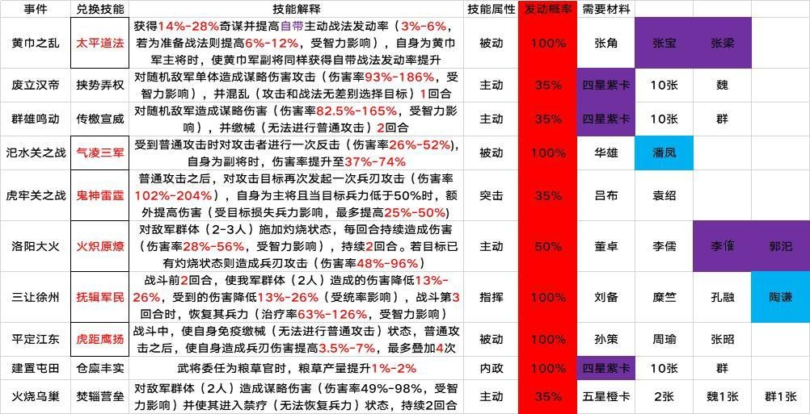
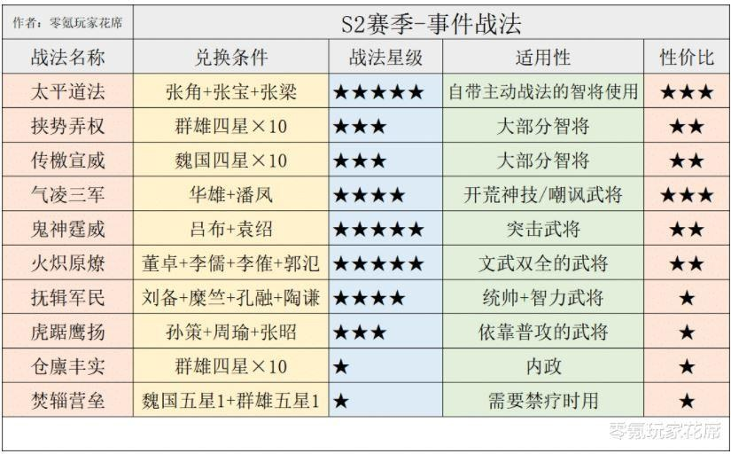

开荒前准备
1. S2 开局保留与重置内容详解
保留内容
- 玉璧、金銖数量
- 装备、材料
- 武将（包括进阶数和觉醒状态）
- 战法、战法演练进度
重置内容
- 名声
- 资源
- 铜币
- 战法点
- 城建设施等级
- 同盟关系
- 任务、试炼、成就
- 首储奖励
2. 武将与重塑说明
武将保留与重置规则
- 保留：
- 所有抽到的武将，包括其进阶数和觉醒状态。
- 重置：
- 武将等级、经验、配点、自带战法等级、已学习战法。
注意： 新赛季需要重新培养武将，但进阶和觉醒状态保留。重塑可以恢复用于进阶的武将，尤其是 S2 赛季开始后部分战法需通过兑换获得的情况。
重塑机制
- 重塑后的武将等级不变，但每次重塑有 10 天冷却时间。
- 需提前重塑重要武将以便兑换战法。
3. 战法点储备与使用
战法点储备技巧
- 进入 S2 赛季时，战法点将 全部重置，建议在赛季结束前开始囤积。
- 建议：
- 不要急于转化武将以获取战法点。
- 进阶三星武将（尽量变成三红勾玉）来节省武将栏位。
武将上限为 200 个，多余的三星武将建议直接进阶。
赛季前准备
- 提前 1 个月 开始囤积三星武将和铜币。
- 赛季末尽量花光所有铜币，避免浪费。
4. 金銖储备与使用
储备建议
-
S2 赛季开局有 霸业卡包：
- 单次抽取消耗 398 金銖。
- 可抽 20 次，每次必得良将或名将。
- 满抽需 7960 金銖（基本保底 2 橙将，提早抽到可收手）。
-
如果战法点不足，也可使用金銖转化战法点。
-
月卡党建议：
- 在赛季种田期停止半价武将抽卡，积攒金銖。
5. 赛季奖励注意事项
赛季奖励的条件可以通过以下路径查看：
主页面 → 更多 → 霸业 → 右下角【赛季说明】。
基本条件
- 君王殿需升至 10 等。
6. 开荒重点内容整理
武将（战法点）储备
- 锁定换事件战法和重要武将：避免误操作被转化。
- 金猪转化战法点推荐：
- 铜币转化：约 1w7-1w9 战法点。
- 金猪转化：约 3w4-3w8 战法点（基本满足 4 个 5 星 10 级战法需求）。
推荐锁定武将
- 李典、郭淮、张宝、朱儁（四星神将）。
- 张任（与袁绍、朱儁搭配，适合平民群弓组合）。
- 各类内政武将、事件战法武将、器械 S 紫卡。
7. 装备、战马、宝物储备
装备准备
- 推荐打野：
- 8 级野怪：50% 爆紫色材料。
- 9 级野怪：100% 爆紫色材料。
- 10 级野怪：100% 爆紫色材料，5% 概率爆装备图纸。
- 战马与宝物获取：
- 每天坚持训马和寻访，积累橙马和宝物。
注意： 同一装备特技在同一武将身上只能生效一次。 可以参考下述战报截图
8. 优秀的开荒技能
S 级技能
盛气凌敌、横扫千军、陷阵营、八门、杯蛇、瞋目横矛、破阵、夺魄、暂避、兵无常势。
A 级技能
传檄宣威（新）、御敌屏障、落凤、纵兵劫掠、坐守孤城、轻勇飞燕、暴敛四方。
9. 事件战法列表
 